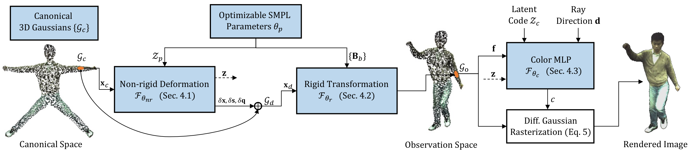

TL;DR: Given a monocular video, 3DGS-Avatar learns clothed human avatars that model pose-dependent appearance and generalize to out-of-distribution poses, with short training time and interactive rendering frame rate.
Our method optimizes a set of 3D Gaussians in canonical space, which is initialized via sampling points from a canonical SMPL mesh surface. Each canonical Gaussian first goes through a non-rigid deformation module conditioned on an encoded pose vector (Section 4.1) to model pose-dependent cloth deformation, then transformed to the observation space (Section 4.2) via forward skinning with learned skinning weights. Note that our method only learns skinning field in canonical space and requires no inverse skinning which is typically difficult to compute and often leads to multiple solutions. Hence we show good generalization to unseen poses. Instead of spherical harmonics, we use a small MLP to decode color for each Gaussian, which is designed to be responsive to local non-rigid deformations and dynamic lighting conditions, ensuring a more realistic rendering of the avatar's appearance. Finally, the observation space 3D Gaussians and their respective color values are accumulated via differentiable Gaussian rasterization to render the image. We additionally apply as-isometric-as-possible regularization to both the Gaussian mean and covariance, which helps realistic deformation of the avatar, particularly in highly articulated and out-of-distribution poses.
Our method optimizes a set of 3D Gaussians in canonical space, which is initialized via sampling points from a canonical SMPL mesh surface. Each canonical Gaussian first goes through a non-rigid deformation module conditioned on an encoded pose vector (Section 4.1) to model pose-dependent cloth deformation, then transformed to the observation space (Section 4.2) via forward skinning with learned skinning weights. Note that our method only learns skinning field in canonical space and requires no inverse skinning which is typically difficult to compute and often leads to multiple solutions. Hence we show good generalization to unseen poses. Instead of spherical harmonics, we use a small MLP to decode color for each Gaussian, which is designed to be responsive to local non-rigid deformations and dynamic lighting conditions, ensuring a more realistic rendering of the avatar's appearance. Finally, the observation space 3D Gaussians and their respective color values are accumulated via differentiable Gaussian rasterization to render the image. We additionally apply as-isometric-as-possible regularization to both the Gaussian mean and covariance, which helps realistic deformation of the avatar, particularly in highly articulated and out-of-distribution poses.

Please kindly refresh the page in the case that certain videos are missing.
Comparison to baselines. The training time and rendering frame rate is marked under the methods.
Novel view synthesis results on ZJU-MoCap, evaluated on the camera furthest from the training view. We additionally demonstrate 360-degree freeview rendering on certain frames.
Reconstructed avatars on PeopleSnapshot.